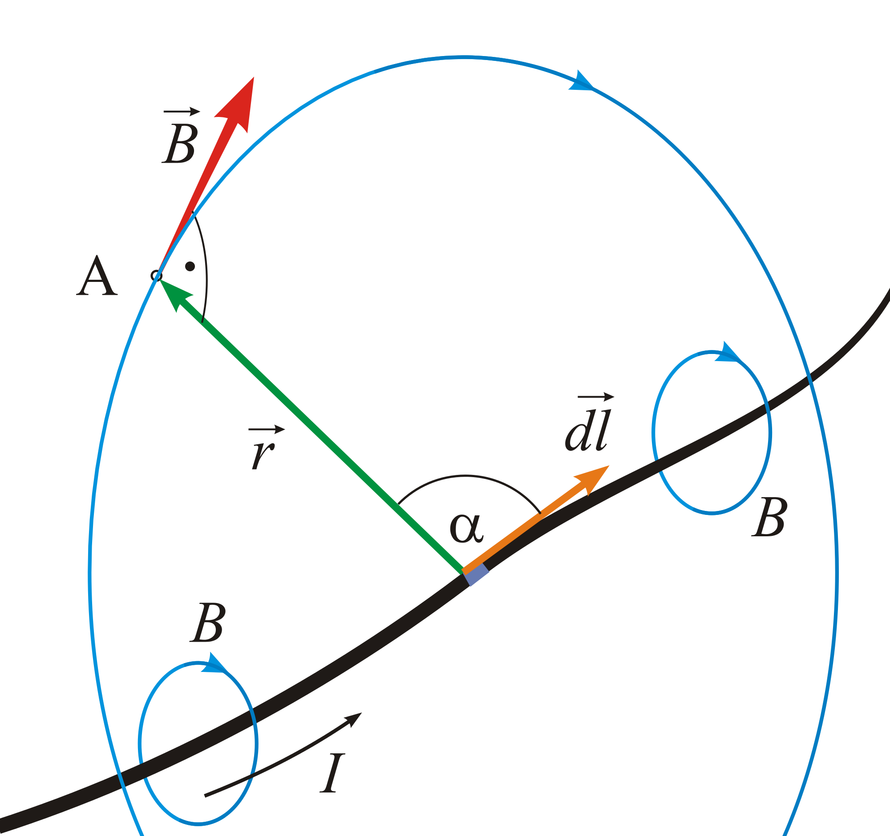

Electric fields help us to visualize and explain the attraction and repulsion of charged objects, but they are not the only field of interest. Charged objects in motion (like those within a current-carrying wire) create a magnetic field around them that can orient and move magnets. The equation governing how the field appears is known as the Law of Biot-Savart, and involves fairly challenging vector mathematics. The following picture from Wikipedia Commons demonstrates the complexity:
In this photo, the current-carrying wire is the thick black line. The arrow and letter I show the direction of the current. The green arrow r points to some point in space A. At that point, there's a magnetic field B. The Law of Biot-Savart allows us to calculate the strength and direction of that field.
VPython Simulation of Magnetic Field
When an electron accelerates, the electric field it generates and the magnetic field it generates changes. A wave of this change moves outward at great speed - we know this as electromagnetic radiation, or LIGHT. Here is a simulation of this phenomenon, which has an electron (red) and a proton (yellow) oscillating back and forth. The blue vector field is magnetic, the white vector field is electric. Can you see the waves moving outward?
The simulation displays a blue wire that carries current, and the wire's ends are marked in yellow, allowing you to move it around as per your preference. Within the field created by the wire, there is a red electron that moves in a way that is distinct from what was observed in the earlier electric field simulation. The simulation offers buttons and sliders for adjustment, so you can go to FULLSCREEN mode to view everything and experiment with the simulation to gain a better understanding.